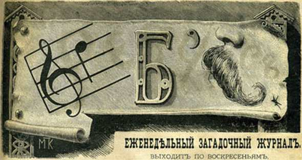

Игры без компьютера
История создания ребусов
Слово "ребус" происходит от латинского res (вещь) и обозначает представление имен, слов и фраз изображениями, фигурами, композициями из букв и т.п. Само слово появилось из латинской фразы "Non verbis sed rebus", что значит "Не словами, а при помощи вещей". Иногда термин rebus ассоциируют с латинским словом rebis (обращение).
Историю возникновения ребуса можно отнести к древним временам, когда люди передавали друг другу информацию с помощью примитивных изображений. Древние египтяне еще за три-четыре тысячелетия до нашей эры использовали эти приемы, когда некоторые слова было проще нарисовать нежели написать.
В качестве шуточных загадок первыми использовать ребусы начали французы в пятнадцатом веке. В то время так называлось выступление, высмеивающие неприглядные поступки влиятельных особ при помощи саркастических шуток и замысловатых стихотворных оборотов. Своим выступлениям авторы дали название «De rebus quae geruntur», что в переводе с латинского обозначало «о делах, которые творятся». Это очень потешало простой народ и быстро снискало популярность. Но в шестнадцатом веке такие развлечения были запрещены.
Тогда ребусом стали называть каламбур, построенный на игре слов.Часто это была загадка, состоящая из изображений разных предметов, цифр или букв.
Постепенно ребусы становились все более популярными и начали покидать пределы Франции, распространяясь по Италии, Англии, Германии. Во второй половине XIX века ребусы стали широко применяться в обществе. Их популярность не падает и сейчас. Они отлично развивают память и сообразительность. К тому же интересны как взрослым, так и детям.